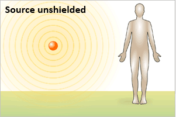
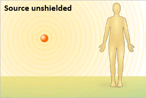
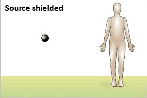

Exposure
Scroll down for 3 frames



- Radiation exposure occurs when all or part of the body absorbs penetrating ionizing radiation from an external radiation source, as shown in the illustration above.
- Exposure from an external source stops when a person leaves the area of the source, the source is shielded completely, or the process causing exposure ceases.
- Radiation exposure also occurs after internal contamination, i.e., when a radionuclide is ingested, inhaled or absorbed into the blood stream.
- This kind of exposure stops only if the radionuclide is totally eliminated from the body, with or without treatment.
- An individual exposed only to an external source of radiation, as shown above, is NOT radioactive or contaminated and may be approached without risk, just like after a chest x-ray or CT scan.
- Radiation from external exposure alone is either absorbed without the body becoming radioactive, or it can pass through the body completely.
- Therefore, if a person is scanned with a radiation survey monitor after external exposure alone, the device will not register radiation above the background level.
- Acute Radiation Syndrome (ARS) may result if the dose from whole or partial body exposure is high enough.
- Diagnosis of ARS usually requires specific blood tests and clinical findings.
<< Home